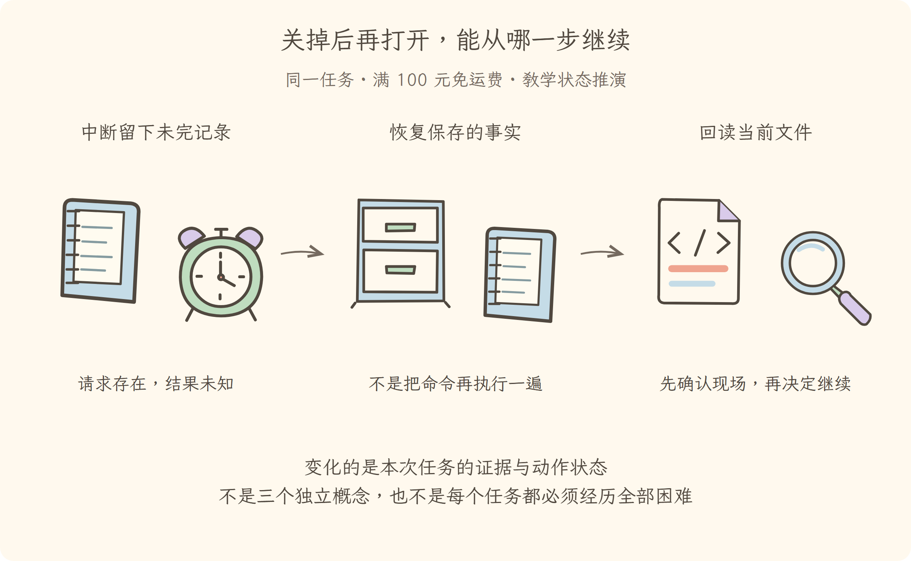
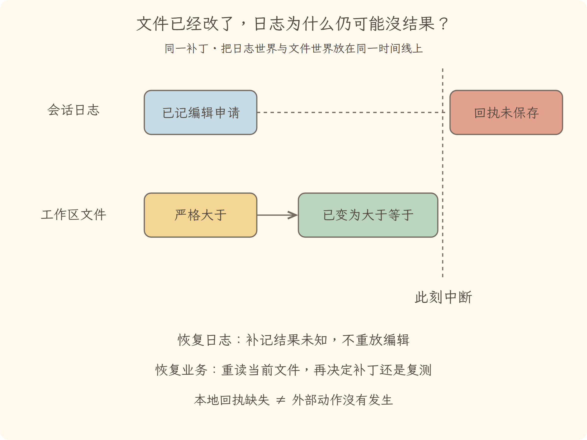

学习导航
第08讲 · 关掉后再打开，能从哪一步继续
源码基线：cd5ef8148158c3a752a658978873241fdf8e2bbc。业务案例为虚构 Java 运费服务；图与流程是教学推演，源码事实另有固定证据。
从这里接上
已经记录报告和修改意图，但进程中断。本讲要回答：关掉后再打开，能从哪一步继续？
上一讲解决了“在正确工作区、明确边界内尝试动作；拒绝不降级绕过”；这仍不能代替本讲要补的责任。
阅读与完成标准
先看逐步讲解，再做练习。视觉课件用于复习，词典随用随查，不要求先背英文。预计正文阅读 20–35 分钟，练习 10–20 分钟；这是安排建议，不是学会的证明。
读完应能解释：恢复时发现编辑请求没有结果，应立即重做吗？ 还要能预测：恢复后的日志完整，是否证明所有旧进程也恢复了？ 最后从源码证据定位相应责任。
现在必须懂的是本讲怎样改变证据或动作状态；具体框架中的其他选项知道存在即可，不用一次读完整个包。语法卡住可查补课 A、补课 B，工程定位查补课 C，看完返回此处即可。
本讲交接
恢复记录后检查当前文件，不把恢复等同于重执行。但下一步还要解决：材料多到一次看不完，怎样留下关键证据。
工程深度验收
能沿文件后端、协调器和内存会话追踪恢复路径；能区分只读检查、提交修复和现场业务核对。 正文提供对应上游局部测试命令，练习要求先预测再读断言，不用付费模型也能观察机制。
← 第07讲：执行边界 · 第09讲：长材料与压缩 →
视觉课件
第08讲 · 关掉后再打开，能从哪一步继续
源码基线：cd5ef8148158c3a752a658978873241fdf8e2bbc。业务案例为虚构 Java 运费服务；图与流程是教学推演，源码事实另有固定证据。
当前现场
已经记录报告和修改意图，但进程中断。固定业务约定不变：满 10000 分免运费；原实现在等于时返回 800。禁止用修改预期的方式让测试变绿。

三分钟复述
先描述左格缺什么，再说明中格采取的机制，最后指出右格新增了哪些证据或责任。恢复记录后检查当前文件，不把恢复等同于重执行。不要只读图上的物件名；删掉中间这项机制，任务会在哪一步失去依据？
本讲最容易误会的是：恢复后的日志完整，是否证明所有旧进程也恢复了？ 不是。日志恢复的是事实与结构，不是进程栈或外部世界；后台任务要看独立生命周期。
从图返回源码
图只表达教学关联与状态变化，不代替完整调用顺序。源码定位提供实现或契约证据，正文解释映射和边界。
从场景走到内部机制

沿正文给出的具体时刻、条件或数据解释图，不把箭头都当成同一种关系。
← 第07讲：执行边界 · 第09讲：长材料与压缩 →
逐步讲解
第08讲 · 关掉后再打开，能从哪一步继续
源码基线：cd5ef8148158c3a752a658978873241fdf8e2bbc。业务案例为虚构 Java 运费服务；图与流程是教学推演，源码事实另有固定证据。
一、重新打开，不是把时间倒回断点
第七讲确认了运费服务的执行目录。现在用户关闭任务，随后重新打开。日志最后可能写着“准备修改”，也可能已经有编辑成功回执；但测试进程可能尚未启动，或者已经启动而结果没来得及记录。
Resume（恢复继续）首先恢复可重建的任务事实，不是恢复模型的意识，也不必然恢复同一个操作系统进程。它像接班工程师打开值班记录：能知道前班做过什么，但仍要看现场设备实际处于什么状态。
三格为同一运费任务的教学状态变化或故障对照。图不是实际运行日志；关键区别见各格说明。
二、至少有三种不能混淆的状态
内存会话有记录，不等于持久化后端已经保存；磁盘有完整记录，不等于外部动作被完整记录；记录能够重放，不等于外部动作应该重做。
例如编辑已经落在文件上，而工具结果未保存。如果恢复时直接重跑编辑，可能重复修改或覆盖别人后来改动。正确做法是恢复事实、标记缺失结果，再读当前文件判断下一步。只读操作的重试也要有理由，而非把整个历史命令一股脑再执行一遍。
三、恢复契约与具体实现要分开看
以下是固定提交中的定位片段（连续原文；中文说明放在代码之外）：
async prepare(id: SessionId, signal?: AbortSignal): Promise<SessionPreparation> {
signal?.throwIfAborted()
const loaded = await this.load(id)
signal?.throwIfAborted()
const sessions = this.ctx.get('sessions')
if (sessions === undefined) {
throw new Error('cannot prepare a session: SessionStore is not configured')
}
return SessionPreparation.create(sessions.prepare(id, {
seed: loaded.events.map(event => structuredClone(event)),
meta: structuredClone(loaded.meta),
seedSource: 'persistence',
}))
}
这里的 prepare 取得持久化记录，把事件和元数据交给内存会话准备入口。后面的 load 是服务声明，注释规定如何处理冷恢复：为中断尾部补齐缺失工具错误和开放的步骤、轮次边界；只丢弃撕裂的最后物理记录，已提交前缀损坏应拒绝。
这不是“见到错误就尽量猜着修”。未知版本、无法支持的事实或已提交内容损坏，可能意味着程序无法可靠理解记录，拒绝比编造连续历史更诚实。具体文件与数据库后端必须实现这份契约。
3.1 从声明走进文件后端：谁读、谁修、谁发布
只看到上面的接口还不足以理解恢复。本讲选择 JSONL（逐行存储结构化记录的文本格式）文件后端，沿后端入口继续：后端的 load 把编排交给持久化协调器，文件后端负责读物理字节、识别完整前缀与截断位置，并实施最终写入。
接着看协调器的冷恢复准备。它取得存储前缀后，核对会话身份、格式版本、事件支持范围；再生成缺失的结束记录，把原始完整事件与补记事件组成平衡日志；最后准备一个尚未发布的内存会话。不是一边读到半条记录、一边把半成品实例暴露给其他调用者。
“先准备、后提交、再交接”像接班前先检查账本。读取阶段看到的修复结果不一定已经写回磁盘。inspect（只读检查）可以给出内存中的逻辑修复视图；load（加载并提交必要恢复）则负责让需要的冷修复成为持久事实。只读查看不该悄悄更改原始文件，这也是排障工具和真正恢复操作要分开的原因。
3.2 文件正在被写入时，怎样避免读到两版拼接的历史
文件后端的稳定读取先取文件修订标识，读字节，再取一次标识。前后相同才接受这次读取，否则重读，并持续检查取消。这里的修订标识像账本封条，不是业务代码摘要，也不是绝对排除一切外部并发修改的分布式锁。
对明文记录，扫描器返回完整事件前缀和已提交字节数。如果总字节数更长，后端携带一个撕裂尾部标记交给协调器。提交修复时，物理修复方法先处理截断，再追加应保留的恢复事件与缺失闭合事件。两步分别要求写入确认，不把它宣传为不可分割的一次原子事务。
这解释了两个看似严格的限制：已提交前缀损坏不能按“尾巴没写完”处理；仍绑定活跃实例的身份也不能任意当成崩溃对象去修复。否则两个活跃执行者可能同时“帮对方补结束”，制造本来不存在的事实。
四、日志修复与业务恢复是不同动作
补上一条“结果未知”的终止记录，只让日志结构能够被解释，并没有证明运费文件未修改。文件属于外部世界，它可能在进程中断后继续变化。
因此本书恢复流程先重新核对代码内容与版本；如果已经是正确比较符号，就不要再次应用同一补丁，而要查看是否有针对当前版本的测试证据。若授权是否仍有效不明确，应重新取得限定许可。本书教学执行器在恢复后不自动恢复写许可；这是教学策略选择，不声称上游一律采用同样策略。
可以类比 Java 服务里的事务日志和远端接口调用：本地状态恢复不自动给远端动作提供恰好一次语义。要声称不会重复执行，需要专门的身份与幂等设计及证据。
将中断放在三个位置分别推演：编辑申请还未派发，文件可能未变；文件已经写好但回执未持久化，结果未知；回执与当前版本测试都已确认保存，恢复可以核对后继续。三者最后都可能显示“进程不在了”，但安全的下一步不同。
如果你的 Java 服务调用远端付款接口，这相当于本地没记录到响应，不能据此再扣一次款。解决方法可能是持久动作标识、远端幂等键、状态查询和人工处理未知结果。对于本例补丁，重新读文件并核对前置内容更直接；不能宣称这种补丁策略自动解决任意外部副作用。
五、怎样做一个不花模型费用的恢复实验
在本书教学运行器里，先只写入编辑请求，不写结果；保存快照后建立一个新执行器。恢复应补成未知结果，文件仍保持原样。再恢复一次，不能为同一个请求重复补两条结果。
另一个实验让文件已经修改，却没有新测试记录；恢复后验收仍必须失败。它检验“修改完成”和“测试通过”没有混在一起，而不是测试真实模型是否聪明。
这些实验不依赖外部服务，也不能替代真实后端的崩溃与磁盘写入测试。将实验层次说清，才能知道通过的究竟是哪一种约束。
因此再运行上游真正文件后端的局部测试，而不是停在内存快照：
node node_modules/vitest/vitest.mjs run packages/session/session-persistence-jsonl/tests/jsonl.spec.ts --maxWorkers=1 --no-file-parallelism
作者已在第八至十讲四文件验证批次中执行，合计 274 项通过；该批次包含文件后端、基础压缩、子任务结果收束与进程内创建。文件测试使用临时材料，不是破坏真实会话来验证恢复。练习时重点阅读测试如何区分尾部撕裂、完整前缀损坏、只读检查与提交恢复，不要在你自己的真实会话文件上随意剪字节。
从成本看，全量恢复最容易理解，但长日志反复扫描开销不小；准备结果可复用会更快，却增加修订核验和所有权管理。只要外部持续写入，稳定读取就可能迟迟不能完成；这是需要可观测等待和取消的条件，不该用“恢复成功”掩盖它。
六、恢复得越多，记录就越长
断点续做让任务可以延续，也让材料越积越多。报告、代码、尝试、失败、解释都挤在一起。第九讲面对新的容量问题：原始记录不能丢，模型一次又看不完，怎样留下足够的关键材料？
← 第07讲：执行边界 · 第09讲：长材料与压缩 →
分享稿
第08讲 · 关掉后再打开，能从哪一步继续
源码基线：cd5ef8148158c3a752a658978873241fdf8e2bbc。业务案例为虚构 Java 运费服务；图与流程是教学推演，源码事实另有固定证据。
用自己的话讲给同事
我们还在查同一个 Java 运费问题：满 100 元应免运费，恰好边界却收了 8 元。走到本讲，已有条件是：已经记录报告和修改意图，但进程中断。
如果不补这一层，会遇到的问题是：恢复时发现编辑请求没有结果，应立即重做吗？ 不应。外部修改可能已发生，只是回执未保存；先标记未知并回读当前文件。 所以本讲新增的不是要背的名词，而是任务中一项明确的责任。
现在能做到：恢复记录后检查当前文件，不把恢复等同于重执行。但还要守住反例：恢复后的日志完整，是否证明所有旧进程也恢复了？ 不是。日志恢复的是事实与结构，不是进程栈或外部世界；后台任务要看独立生命周期。
请结合本讲图说出变化，再指向源码；不要宣称这段教学推演就是实际模型日志。下一讲顺着“材料多到一次看不完，怎样留下关键证据”继续。
深入一层再收尾
能沿文件后端、协调器和内存会话追踪恢复路径；能区分只读检查、提交修复和现场业务核对。 分享时选一个故障分支，把正常路径与异常路径的证据区别讲清楚。作者验证来自受控测试，不冒充真实模型生产评测。